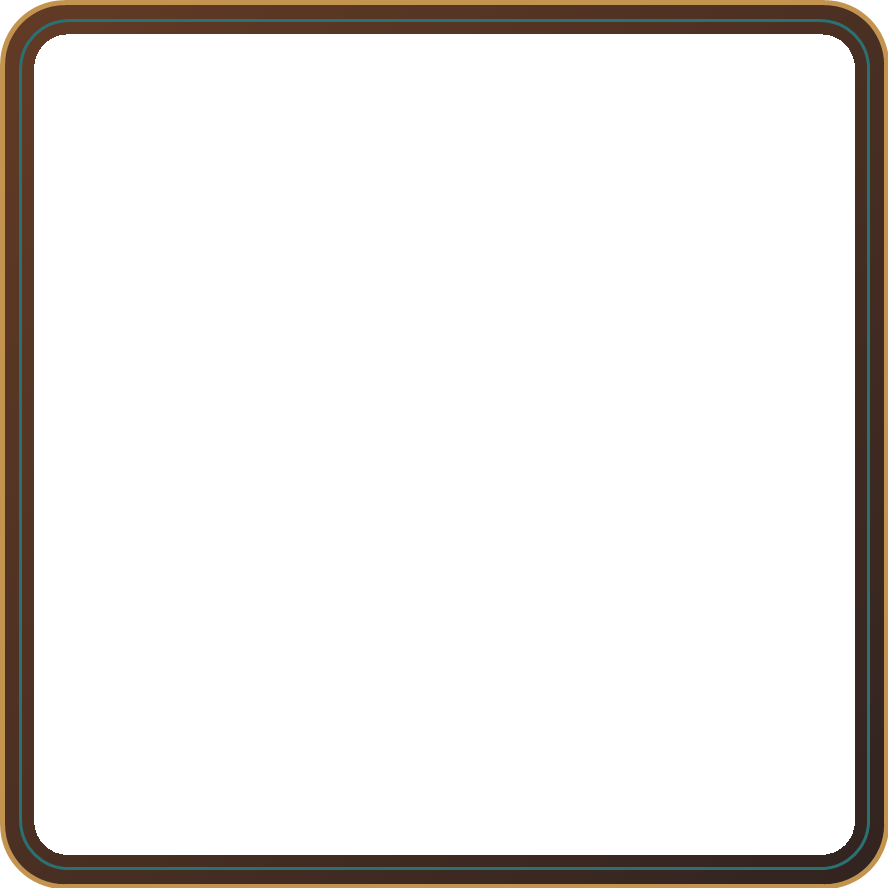
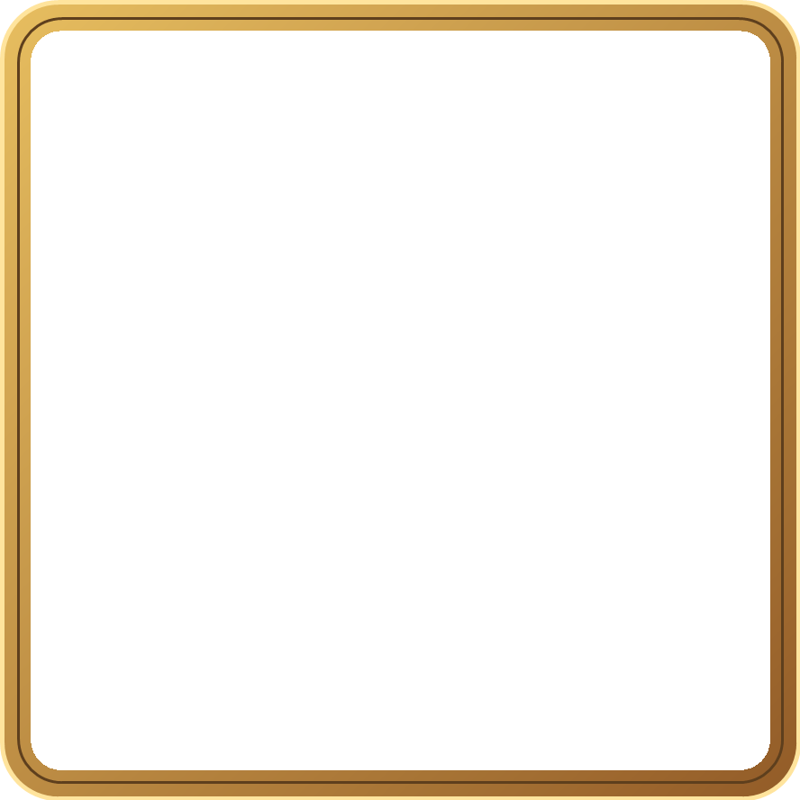

A · Ceviz ve teal
Normal bölüm için sıcak ahşap, ince teal çizgi.
Orta alan şeffaftır; örnekteki nötr zemin yalnızca boşluğu gösterir.

Normal bölüm için sıcak ahşap, ince teal çizgi.

Zor bölümlere daha parlak altın çerçeve.